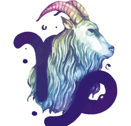

sobre
Dentre os signos, provavelmente os capricornianos são os mais céticos. Isso porque eles têm como elemento base a Terra, ou seja: seus pés estão bem fincados no chão, no que frutifica, é palpável e vale a pena. Outro ponto chave dos signos terrenos é a disciplina e a dedicação que brota aos montes quando estão empenhados em obter algo. A personalidade de Capricórnio é, particularmente, sábia e bastante discreta. Dificilmente você verá um capricorniano raiz cometendo loucuras impensadas ou sendo impulsivo.
amor

Quem é de Capricórnio costuma buscar por pessoas que se encaixem em seus padrões familiares, e o casamento é sinônimo de formação de uma família. Capricornianas e capricornianos, quando gostam de alguém, procuram cuidar da pessoa parceira, assim como ser cuidado por ela. Outra característica capricorniana é que, com o passar do tempo, podem compensar a perda da juventude unindo-se a parceiros bem mais jovens, o que, na maioria das vezes, pode levar a problemas de convivência.
trabalho
Excelente organizador e administrador, tem sucesso em atividades onde é requerido um alto nível de responsabilidade e trabalho sério. Controle de qualidade, área de teste de produtos, chefia de fábricas e grandes empresas. Construção, engenharia, imóveis, também são área nas quais o capricorniano costuma se destacar.